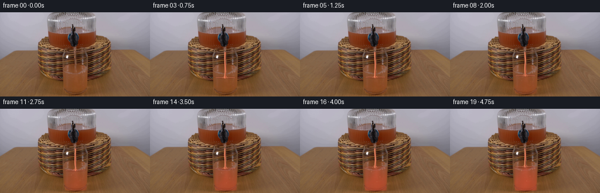
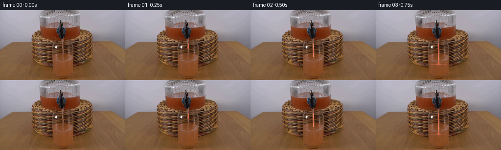

CODING AGENTS AS PIXEL WORLD MODELS
traex/GPT-5.6-Sol · 0071
点击播放 · 原生 RGB 像素
逐轮保存的候选
回放视频、检查图与代码变化。
每份候选均可单独播放。实际图片检查记录在下方工具轨迹中。
候选 01播放与检查图
点击播放 · 原生 RGB 像素


展开代码变化
--- 上一保存版本
+++ 本次保存版本
@@ -0,0 +1,202 @@
+"""Generate the requested locked-off grapefruit-juice pouring demonstration.
+
+The source frame is used as the complete set/background. Only the liquid is
+animated: a translucent stream falls from the central dispenser outlet and
+mixes into the water already in the glass.
+"""
+
+from pathlib import Path
+
+import cv2
+import numpy as np
+from PIL import Image
+
+import artifact_io
+
+
+H, W = 144, 256
+
+
+def soft_polygon(points, blur=0.8):
+ """Return an antialiased float mask for a polygon."""
+ scale = 4
+ canvas = np.zeros((H * scale, W * scale), np.uint8)
+ p = np.rint(np.asarray(points) * scale).astype(np.int32)
+ cv2.fillPoly(canvas, [p], 255, lineType=cv2.LINE_AA)
+ canvas = cv2.resize(canvas, (W, H), interpolation=cv2.INTER_AREA)
+ if blur:
+ canvas = cv2.GaussianBlur(canvas, (0, 0), blur)
+ return canvas.astype(np.float32) / 255.0
+
+
+def soft_ellipse(center, axes, blur=0.55):
+ scale = 4
+ canvas = np.zeros((H * scale, W * scale), np.uint8)
+ c = tuple(np.rint(np.asarray(center) * scale).astype(int))
+ a = tuple(np.maximum(1, np.rint(np.asarray(axes) * scale).astype(int)))
+ cv2.ellipse(canvas, c, a, 0, 0, 360, 255, -1, cv2.LINE_AA)
+ canvas = cv2.resize(canvas, (W, H), interpolation=cv2.INTER_AREA)
+ if blur:
+ canvas = cv2.GaussianBlur(canvas, (0, 0), blur)
+ return canvas.astype(np.float32) / 255.0
+
+
+def soft_line(points, widths, blur=0.45):
+ """Rasterize a varying-width polyline as overlapping soft segments."""
+ scale = 4
+ canvas = np.zeros((H * scale, W * scale), np.uint8)
+ pts = np.asarray(points, np.float32)
+ for i in range(len(pts) - 1):
+ p0 = tuple(np.rint(pts[i] * scale).astype(int))
+ p1 = tuple(np.rint(pts[i + 1] * scale).astype(int))
+ width = max(1, int(round((widths[i] + widths[i + 1]) * 0.5 * scale)))
+ cv2.line(canvas, p0, p1, 255, width, cv2.LINE_AA)
+ canvas = cv2.resize(canvas, (W, H), interpolation=cv2.INTER_AREA)
+ if blur:
+ canvas = cv2.GaussianBlur(canvas, (0, 0), blur)
+ return canvas.astype(np.float32) / 255.0
+
+
+def composite(frame, color, mask, opacity=1.0):
+ a = np.clip(mask * opacity, 0.0, 1.0)[..., None]
+ return frame * (1.0 - a) + np.asarray(color, np.float32) * a
+
+
+def smoothstep(x):
+ x = np.clip(x, 0.0, 1.0)
+ return x * x * (3.0 - 2.0 * x)
+
+
+def make_frame(base_u8, index):
+ if index == 0:
+ return base_u8.copy()
+
+ base = base_u8.astype(np.float32)
+ frame = base.copy()
+ t = index / 4.0
+ # Juice reaches the water after about 0.65 seconds. The water level then
+ # rises modestly, since there was already water in the glass.
+ mix = smoothstep((index - 2.0) / 17.0)
+ surface_y = 112.0 - 13.0 * mix
+
+ yy, xx = np.mgrid[0:H, 0:W].astype(np.float32)
+ left = 107.8 + 0.018 * (yy - 90.0)
+ right = 149.2 - 0.014 * (yy - 90.0)
+ interior = (xx > left + 1.4) & (xx < right - 1.4) & (yy > surface_y) & (yy < 139.4)
+
+ # Concentrated juice descends as a soft turbulent plume before spreading
+ # through the water. Two gently wandering lobes prevent the fill from
+ # looking like a flat painted rectangle.
+ phase = 0.78 * index
+ plume_x = 128.3 + 1.15 * np.sin(0.72 * phase + yy * 0.105)
+ plume_w = 4.0 + 0.18 * np.maximum(yy - surface_y, 0.0)
+ plume = np.exp(-0.5 * ((xx - plume_x) / np.maximum(plume_w, 1.0)) ** 2)
+ plume *= np.exp(-np.maximum(yy - surface_y, 0.0) / 52.0)
+ eddy = 0.5 + 0.5 * np.sin(xx * 0.31 + yy * 0.22 + phase)
+ bottom_mix = np.clip((yy - surface_y) / 25.0, 0.0, 1.0)
+ concentration = mix * (0.20 + 0.30 * bottom_mix + 0.35 * plume + 0.055 * eddy)
+ concentration *= interior.astype(np.float32)
+ concentration = cv2.GaussianBlur(concentration, (0, 0), 1.25)
+
+ # Grapefruit juice remains translucent: source texture and refraction in
+ # the real glass stay visible underneath the color.
+ frame = composite(frame, (226, 82, 62), concentration, 0.76)
+ warm_depth = interior.astype(np.float32) * mix * np.clip((yy - surface_y) / 38.0, 0.0, 1.0)
+ frame = composite(frame, (188, 55, 38), cv2.GaussianBlur(warm_depth, (0, 0), 0.8), 0.12)
+
+ # Liquid surface/meniscus. Draw subdued body shadow plus a broken warm
+ # highlight, restricted to the inside of the glass.
+ if index >= 3:
+ ripple = 0.45 * np.sin(index * 1.42)
+ surf = soft_ellipse((128.5, surface_y + ripple), (18.2, 2.15), 0.38)
+ surf *= ((xx > left + 1.1) & (xx < right - 1.1)).astype(np.float32)
+ frame = composite(frame, (126, 42, 31), surf, 0.20 + 0.13 * mix)
+
+ highlight = soft_line(
+ [(112.0, surface_y - 0.05), (119.0, surface_y - 0.65),
+ (126.0, surface_y - 0.25), (133.0, surface_y - 0.75),
+ (144.8, surface_y - 0.10)],
+ [0.45] * 5,
+ 0.28,
+ )
+ frame = composite(frame, (250, 155, 118), highlight, 0.38)
+
+ # Falling stream. In the first two animated frames the leading edge is
+ # still descending, after which the flow continuously meets the surface.
+ outlet_y = 68.7
+ if index == 1:
+ end_y = 79.0
+ elif index == 2:
+ end_y = 96.0
+ else:
+ end_y = surface_y + 0.5
+
+ flow_wave = 0.48 * np.sin(index * 1.18)
+ ys = np.linspace(outlet_y, end_y, 9)
+ xs = (128.2 + flow_wave + 0.38 * np.sin(ys * 0.19 + index * 0.63)
+ + 0.11 * (ys - outlet_y) / max(1.0, end_y - outlet_y))
+ points = list(zip(xs, ys))
+ widths = 1.5 + 0.38 * (0.5 + 0.5 * np.sin(ys * 0.32 + index))
+ stream = soft_line(points, widths, 0.36)
+ frame = composite(frame, (235, 99, 68), stream, 0.79)
+
+ # A fine bright filament and darker edge convey cylindrical transparency.
+ core_points = [(x - 0.42, y) for x, y in points]
+ core = soft_line(core_points, [0.38] * len(points), 0.18)
+ frame = composite(frame, (255, 190, 139), core, 0.71)
+ edge_points = [(x + 0.78, y) for x, y in points]
+ edge = soft_line(edge_points, [0.30] * len(points), 0.24)
+ frame = composite(frame, (142, 43, 32), edge, 0.47)
+
+ # Small time-varying impact ripples/splashes. They stay physically close
+ # to the stream and are deliberately tiny at this image scale.
+ if index >= 3:
+ impact_y = surface_y - 0.7
+ amp = 1.0 + 0.42 * np.sin(index * 2.07)
+ for side, off in [(-1, 0.0), (1, 1.7)]:
+ cx = 128.2 + side * (2.2 + 0.35 * np.sin(index + off))
+ cy = impact_y - amp * (0.8 + 0.35 * np.cos(index * 1.6 + off))
+ droplet = soft_ellipse((cx, cy), (0.62, 0.88), 0.24)
+ frame = composite(frame, (246, 131, 91), droplet, 0.60)
+ ring = soft_ellipse((128.3, impact_y + 0.8), (4.6 + 0.35 * amp, 1.0), 0.24)
+ inner = soft_ellipse((128.3, impact_y + 0.8), (3.7 + 0.35 * amp, 0.48), 0.20)
+ ring = np.clip(ring - 0.86 * inner, 0.0, 1.0)
+ frame = composite(frame, (247, 145, 104), ring, 0.36)
+
+ # Sparse bubbles visible only once mixing is established.
+ if index >= 7:
+ bubbles = [
+ (121.8 + 0.3 * np.sin(index), surface_y + 9.8 - 0.16 * index, 0.55),
+ (136.1 + 0.4 * np.cos(index * 0.7), surface_y + 18.0 - 0.11 * index, 0.48),
+ (130.8 + 0.2 * np.sin(index * 1.3), surface_y + 27.0 - 0.14 * index, 0.42),
+ ]
+ for bx, by, br in bubbles:
+ if by < 137:
+ bubble = soft_ellipse((bx, by), (br, br * 1.16), 0.22)
+ frame = composite(frame, (249, 166, 128), bubble, 0.34 * mix)
+
+ # Restore the strong original glass side edges. This keeps the liquid
+ # convincingly behind the transparent vessel instead of painted over it.
+ glass_edges = np.zeros((H, W), np.float32)
+ glass_edges[:, 106:110] = 1.0
+ glass_edges[:, 148:152] = 1.0
+ glass_edges *= ((yy >= 88) & (yy <= 139)).astype(np.float32)
+ glass_edges = cv2.GaussianBlur(glass_edges, (0, 0), 0.42) * 0.52
+ frame = frame * (1.0 - glass_edges[..., None]) + base * glass_edges[..., None]
+
+ return np.clip(np.rint(frame), 0, 255).astype(np.uint8)
+
+
+def main():
+ case_dir = Path(__file__).resolve().parent
+ first = np.asarray(Image.open(case_dir / "first_frame.png").convert("RGB"), dtype=np.uint8)
+ if first.shape != (H, W, 3):
+ raise ValueError(f"unexpected first frame shape: {first.shape}")
+ frames = np.stack([make_frame(first, i) for i in range(20)], axis=0)
+ # Contract invariant: no operation, however small, may touch frame 00.
+ frames[0] = first
+ artifact_io.save(frames.astype(np.uint8), case_dir)
+
+
+if __name__ == "__main__":
+ main()
可观测工具轨迹
实际执行的命令与返回图片。
命令 1exit 0
/bin/bash -lc "cat prompt.txt && printf '\\n--- GENERATION_RULES ---\\n' && cat GENERATION_RULES.md"
命令 2exit 0
/bin/bash -lc "find . -maxdepth 2 -type f -printf '%p\\n' | sort && printf '\\n--- tools ---\\n' && command -v ffmpeg || true && command -v python3 || true"
命令 3exit 0
/bin/bash -lc "python3 - <<'PY'
from PIL import Image
im=Image.open('first_frame.png')
print('mode,size:', im.mode, im.size)
print('extrema:', im.getextrema())
PY"命令 4exit 0
/bin/bash -lc 'cat artifact_io.py'
命令 5exit 0
/bin/bash -lc "python3 - <<'PY' import importlib.util for m in ['numpy','PIL','cv2','scipy','skimage','imageio']: print(m, bool(importlib.util.find_spec(m))) PY"
命令 6exit 0
/bin/bash -lc "python3 - <<'PY'
from PIL import Image
import numpy as np
im=np.asarray(Image.open('first_frame.png'))
# print downsampled coarse color labels 4x4 median/luminance+dominant mapping
h,w,_=im.shape
chars=[]
for y in range(0,h,4):
row=''
for x in range(0,w,4):
p=np.median(im[y:min(y+4,h),x:min(x+4,w)].reshape(-1,3),axis=0)
r,g,b=p; mx=max(p); mn=min(p); lum=p.mean()
if lum<25:c='@'
elif lum<50:c='#'
elif lum<80:c='O'
elif lum<110:c='o'
elif lum<145:c='*'
elif lum<180:c='.'
elif lum<215:c='-'
else:c=' '
if r>g*1.35 and r>b*1.35 and r>80:c='R'
elif r>g*1.15 and g>b*1.15 and r>100:c='A'
elif g>r*1.25 and g>b*1.15:c='G'
elif b>r*1.2 and b>g*1.08:c='B'
row+=c
print(row)
PY"命令 7exit 0
/bin/bash -lc "python3 - <<'PY'
import cv2, numpy as np
from PIL import Image
im=np.asarray(Image.open('first_frame.png'))
Z=im.reshape(-1,3).astype(np.float32)
crit=(cv2.TERM_CRITERIA_EPS+cv2.TERM_CRITERIA_MAX_ITER,50,.2)
_,lab,cen=cv2.kmeans(Z,12,None,crit,10,cv2.KMEANS_PP_CENTERS)
lab=lab.ravel(); cen=np.rint(cen).astype(int)
for i in np.argsort(np.bincount(lab))[::-1]:
ys,xs=np.where(lab.reshape(144,256)==i)
print(i, len(xs),cen[i].tolist(),'bbox', [xs.min(),ys.min(),xs.max(),ys.max()])
print('row means')
for y in range(0,144,8): print(y, np.rint(im[y:y+8].mean((0,1))).astype(int).tolist())
print('col means')
for x in range(0,256,8): print(x, np.rint(im[:,x:x+8].mean((0,1))).astype(int).tolist())
PY"命令 8exit 0
/bin/bash -lc "python3 - <<'PY'
import cv2, numpy as np
from PIL import Image
im=np.asarray(Image.open('first_frame.png'))
g=cv2.cvtColor(im,cv2.COLOR_RGB2GRAY)
e=cv2.Canny(g,50,120)
# edges over 2x2 blocks, print # density levels
ch=' .:-=+*#%@'
for y in range(0,144,2):
s=''
for x in range(0,256,2):
v=e[y:y+2,x:x+2].mean()/255
s += ch[min(9,int(v*10))]
print(s.rstrip())
PY"命令 9exit 0
/bin/bash -lc "python3 - <<'PY'
import cv2,numpy as np
from PIL import Image
im=np.array(Image.open('first_frame.png')); g=cv2.cvtColor(im,cv2.COLOR_RGB2GRAY); ed=cv2.Canny(g,60,140)
lines=cv2.HoughLinesP(ed,1,np.pi/180,threshold=18,minLineLength=12,maxLineGap=3)
for q in sorted(lines[:,0].tolist(), key=lambda z: -((z[2]-z[0])**2+(z[3]-z[1])**2))[:80]:
x1,y1,x2,y2=q; print(q,'len',round(((x2-x1)**2+(y2-y1)**2)**.5,1),'ang',round(np.degrees(np.arctan2(y2-y1,x2-x1)),1))
PY"命令 10exit 0
/bin/bash -lc "python3 - <<'PY'
from PIL import Image
import numpy as np
im=np.array(Image.open('first_frame.png'))
# Print mean RGB per 8x8 with symbols from kmeans 12
import cv2
small=cv2.resize(im,(64,36),interpolation=cv2.INTER_AREA)
Z=small.reshape(-1,3).astype(np.float32)
_,l,c=cv2.kmeans(Z,16,None,(3,100,.1),20,cv2.KMEANS_PP_CENTERS)
c=np.rint(c).astype(int); l=l.ravel()
# order clusters by hue/brightness; printable 0-F; show centers
for i,v in enumerate(c):print(format(i,'x'),v.tolist(), 'n',sum(l==i))
print()
for row in l.reshape(36,64):print(''.join(format(i,'x') for i in row))
PY"命令 11exit 0
/bin/bash -lc "python3 - <<'PY'
from PIL import Image
import numpy as np
im=np.array(Image.open('first_frame.png'))
# coordinate samples grid step 8, output dominant quantized rgb as brightness hex only and redness index
print('brightness 8x8')
for y in range(0,144,8):
print(f'{y:3}', ''.join('0123456789ABCDEF'[min(15,int(np.mean(im[y:y+8,x:x+8])/16))] for x in range(0,256,8)))
print('redness (R-(G+B)/2) signed categories')
cs='0123456789ABCDEF'
for y in range(0,144,8):
s=''
for x in range(0,256,8):
p=im[y:y+8,x:x+8].mean((0,1)); q=p[0]-(p[1]+p[2])/2
s += cs[min(15,max(0,int((q+16)/6)))]
print(f'{y:3}',s)
PY"命令 12exit 0
/bin/bash -lc "python3 - <<'PY'
import cv2,numpy as np
from PIL import Image
im=np.array(Image.open('first_frame.png')); g=cv2.cvtColor(im,cv2.COLOR_RGB2GRAY); e=cv2.Canny(g,40,100)
# regions at 1 char/pixel
for box in [(40,20,130,110),(120,30,230,130),(140,50,220,144)]:
x0,y0,x1,y1=box; print('\\nBOX',box)
for y in range(y0,y1):
s=''.join('#' if e[y,x] else ' ' for x in range(x0,x1)).rstrip()
if '#' in s:print(f'{y:3} {s}')
PY"命令 13exit 0
/bin/bash -lc "python3 - <<'PY'
from PIL import Image
import numpy as np
im=np.array(Image.open('first_frame.png'))
# local 4x4 grid exact average colors for x140:220 y48:128
for y in range(48,128,4):
print('\\ny',y)
for x in range(140,220,4):
p=im[y:y+4,x:x+4].mean((0,1)).round().astype(int)
print(f'{x}:{p[0]:02x}{p[1]:02x}{p[2]:02x}',end=' ')
print()
PY"命令 14exit 0
/bin/bash -lc "python3 - <<'PY'
import cv2,numpy as np
from PIL import Image
im=np.array(Image.open('first_frame.png')); e=cv2.Canny(cv2.cvtColor(im,cv2.COLOR_RGB2GRAY),60,140)
for y in range(0,144):
xs=np.where(e[y]>0)[0]
# contiguous runs
if len(xs):
bounds=np.r_[0,np.where(np.diff(xs)>1)[0]+1,len(xs)]
runs=[]
for a,b in zip(bounds[:-1],bounds[1:]):
z=xs[a:b]
runs.append(str(z[0]) if z.size==1 else f'{z[0]}-{z[-1]}')
print(f'{y:3}: '+','.join(runs))
PY"命令 15exit 0
/bin/bash -lc "python3 - <<'PY'
import cv2,numpy as np
from PIL import Image
im=np.array(Image.open('first_frame.png')); g=cv2.cvtColor(im,cv2.COLOR_RGB2GRAY); ed=cv2.Canny(g,60,140)
co,_=cv2.findContours(ed,cv2.RETR_LIST,cv2.CHAIN_APPROX_SIMPLE)
for c in sorted(co,key=cv2.contourArea,reverse=True)[:80]:
x,y,w,h=cv2.boundingRect(c); a=cv2.contourArea(c); p=cv2.arcLength(c,False)
print('area',round(a,1),'bbox',x,y,w,h,'points',len(c),'perim',round(p,1))
PY"命令 16exit 0
/bin/bash -lc "python3 - <<'PY'
from PIL import Image
import numpy as np,cv2
im=np.array(Image.open('first_frame.png'))
# 2x2 dominant maps in x40..220 y0..144 brightness charset. axis every 10 chars =20px
for mode in ['lum','sat','red']:
print('\\n',mode,' x40..220 step2')
for y in range(0,144,2):
s=''
for x in range(40,220,2):
p=im[y:y+2,x:x+2].mean((0,1));r,g,b=p
if mode=='lum': v=p.mean(); chars='@%#*+=-:. '; j=min(9,int(v/25.6))
elif mode=='sat': v=max(p)-min(p);chars=' .:-=+*#%@';j=min(9,int(v/12))
else: v=r-(g+b)/2; chars=' .:-=+*#%@';j=min(9,max(0,int((v+5)/8)))
s+=chars[j]
print(f'{y:03} {s}')
PY"命令 17exit 0
/bin/bash -lc "python3 - <<'PY'
from PIL import Image
import numpy as np
im=np.array(Image.open('first_frame.png'))
# print 1 px symbolic maps for bottom center x90:165 y75:144. luminance categories + saturation marking dark
for y in range(70,144):
s=''
for x in range(85,175):
r,g,b=im[y,x]; lum=(int(r)+int(g)+int(b))/3; sat=int(max(r,g,b))-int(min(r,g,b)); red=int(r)-(int(g)+int(b))/2
# Categorize dark D, high red X, else luminance
if lum<25:c='@'
elif lum<40:c='#'
elif lum<55:c='O'
elif lum<70:c='o'
elif lum<85:c='*'
elif lum<100:c='+'
elif lum<120:c='-'
elif lum<145:c='.'
elif lum<175:c=','
else:c=' '
if red>60 and lum>40:c='R'
elif red>40 and lum>50:c='r'
s+=c
print(f'{y:03} {s}')
PY"命令 18exit 0
/bin/bash -lc "python3 - <<'PY'
from PIL import Image
import numpy as np
im=np.array(Image.open('first_frame.png'))
# symbols exact local: dark K (<35); red saturation R; bright W; neutral n
for y in range(35,90):
s=''
for x in range(100,160):
r,g,b=map(int,im[y,x]); lum=(r+g+b)/3; sat=max(r,g,b)-min(r,g,b)
if lum<30:c='K'
elif lum<45:c='k'
elif lum<60:c='o'
elif lum<80:c='x'
elif lum<100:c='-'
elif lum<125:c='.'
elif lum<155:c=','
elif lum<190:c=' '
else:c='W'
if r-g>65 and r-b>70:c='R'
elif r-g>40 and r-b>50:c='r'
s+=c
print(f'{y:02} {s}')
PY"命令 19exit 0
/bin/bash -lc "python3 - <<'PY'
from PIL import Image
import numpy as np
im=np.array(Image.open('first_frame.png')).astype(float)
for name,box in [('dispL',(90,37,120,56)),('dispR',(135,37,160,56)),('spout',(118,55,134,79)),('glass',(108,88,149,140)),('glasslow',(112,120,145,138)),('glasstop',(110,90,147,105)),('bg',(190,20,240,55)),('table',(190,100,240,140))]:
x0,y0,x1,y1=box;a=im[y0:y1,x0:x1]; print(name, 'mean',a.mean((0,1)).round(), 'med',np.median(a.reshape(-1,3),0).round(), 'p10',np.percentile(a.reshape(-1,3),10,axis=0).round(),'p90',np.percentile(a.reshape(-1,3),90,axis=0).round())
PY"命令 20exit 0
/bin/bash -lc "python3 - <<'PY'
import cv2,numpy as np
from PIL import Image
im=np.array(Image.open('first_frame.png')).astype(float)
g=cv2.cvtColor(im.astype('uint8'),cv2.COLOR_RGB2GRAY).astype(float)
gx=np.abs(cv2.Sobel(g,cv2.CV_64F,1,0,ksize=3)); gy=np.abs(cv2.Sobel(g,cv2.CV_64F,0,1,ksize=3))
print('vertical x score by y ranges')
for ya,yb in [(60,90),(75,105),(90,125),(100,140),(115,144)]:
a=gx[ya:yb].mean(0); inds=np.argsort(a)[::-1][:25];print(ya,yb,[(int(x),round(a[x])) for x in inds])
print('horizontal y score x ranges')
for xa,xb in [(90,160),(100,155),(105,150),(145,195)]:
a=gy[:,xa:xb].mean(1);inds=np.argsort(a)[::-1][:25];print(xa,xb,[(int(y),round(a[y])) for y in inds])
PY"命令 21exit 0
/bin/bash -lc "python3 - <<'PY'
from PIL import Image
import numpy as np
im=np.array(Image.open('first_frame.png')).astype(float)
for y0,y1 in [(75,90),(90,105),(105,120),(120,135),(135,144)]:
print('\\ny',y0,y1)
for x0 in range(60,221,10):
p=im[y0:y1,x0:x0+10].mean((0,1));print(f'{x0:03}:{int(p[0]):03},{int(p[1]):03},{int(p[2]):03}',end=' | ')
print()
PY"命令 22exit 0
/bin/bash -lc "python3 - <<'PY'
from PIL import Image
import numpy as np
im=np.array(Image.open('first_frame.png'))
print('each cell brightness hex x110-145')
for y in range(50,96):
print(f'{y:02}', ''.join('0123456789ABCDEF'[min(15,int(im[y,x].mean()/16))] for x in range(105,151)))
print('dark x positions each y center')
for y in range(45,95):
xs=np.where(im[y,:,].mean(1)<50)[0]; xs=xs[(xs>=100)&(xs<=155)]
print(y,xs.tolist())
PY"命令 23exit 0
/bin/bash -lc "python3 - <<'PY'
from PIL import Image
import numpy as np
im=np.array(Image.open('first_frame.png'))
for y in range(65,95):
xs=np.where(im[y].mean(1)>180)[0]
print(y, xs[(xs>90)&(xs<170)].tolist())
PY"命令 24exit 0
/bin/bash -lc "python3 generate.py && python3 - <<'PY'
from PIL import Image
import numpy as np
from pathlib import Path
orig=np.asarray(Image.open('first_frame.png'))
frames=np.stack([np.asarray(Image.open(f'frames/{i:02d}.png')) for i in range(20)])
print('shape dtype',frames.shape,frames.dtype)
print('frame0 exact',np.array_equal(frames[0],orig),'maxdiff',np.abs(frames[0].astype(int)-orig.astype(int)).max())
for i in range(20):
d=np.abs(frames[i].astype(np.int16)-orig.astype(np.int16)); changed=np.any(d,2)
ys,xs=np.where(changed)
print(i,'changed',changed.sum(),'bbox',None if not len(xs) else (xs.min(),ys.min(),xs.max(),ys.max()),'mean_abs',round(d.mean(),3),'max',d.max())
print('artifacts',[(p.name,p.stat().st_size) for p in [Path('pixels.npz'),Path('index.html'),Path('inspection.png'),Path('transition_check.png')]])
PY"命令 25exit 0
/bin/bash -lc "python3 - <<'PY'
from PIL import Image
import numpy as np
F=np.stack([np.array(Image.open(f'frames/{i:02d}.png')) for i in range(20)]).astype(int)
print('Temporal changed pixels and mean abs delta:')
for i in range(1,20):
d=np.abs(F[i]-F[i-1]);print(f'{i-1:02}->{i:02}: px={np.any(d,2).sum():4d} mean={d.mean():.3f} max={d.max():3d}')
print('\\nRGB trajectories:')
for xy in [(128,70),(128,80),(128,90),(128,100),(128,110),(118,110),(138,110),(128,125),(112,125),(145,125)]:
x,y=xy; print(xy,[tuple(F[i,y,x]) for i in [0,1,2,3,5,8,11,14,17,19]])
PY
python3 generate.py
python3 - <<'PY'
from PIL import Image
import numpy as np
z=np.load('pixels.npz')['pixels']
print('\\nnpz',z.shape,z.dtype)
f=np.array(Image.open('frames/00.png'))
packed=((f[...,0].astype(np.uint32)<<16)|(f[...,1].astype(np.uint32)<<8)|f[...,2])
print('npz frame0 packed exact',np.array_equal(z[:,:,0],packed))
PY"命令 26exit 0
/bin/bash -lc "python3 - <<'PY'
from pathlib import Path
from PIL import Image
import numpy as np
first=np.asarray(Image.open('first_frame.png').convert('RGB'))
files=sorted(Path('frames').glob('*.png'))
arr=np.stack([np.asarray(Image.open(p).convert('RGB')) for p in files])
pix=np.load('pixels.npz')['pixels']
assert len(files)==20
assert arr.shape==(20,144,256,3) and arr.dtype==np.uint8
assert np.array_equal(arr[0],first)
assert pix.shape==(144,256,20) and pix.dtype==np.uint32
packed=(arr[...,0].astype(np.uint32)<<16)|(arr[...,1].astype(np.uint32)<<8)|arr[...,2].astype(np.uint32)
assert np.array_equal(pix,packed.transpose(1,2,0))
assert all(Image.open(p).mode=='RGB' and Image.open(p).size==(256,144) for p in files)
print('PASS: 20 RGB frames, 256x144, uint8, frame 00 exact, pixels.npz exact')
PY"命令 27exit 0
/bin/bash -lc 'python3 -m py_compile generate.py artifact_io.py && sha256sum generate.py first_frame.png pixels.npz index.html inspection.png && git status --short 2>/dev/null || true'
保存候选 1 份；完成命令 27 次；可验证图片返回 0 张。原始 API 响应与完整日志保留在本地。